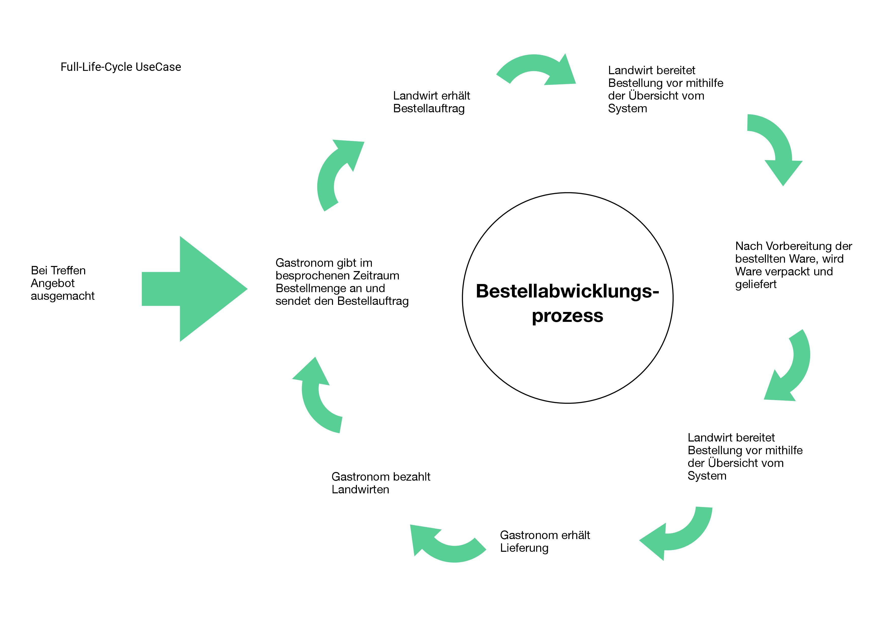

Vorteile für Landwirten
- Regelmäßige Bestellungen
- Potentielle und gezielte Kunden
- Wertschätzung gegenüber Ware und Arbeit
- Kundentreue und Zahlungsmoral
- Aktualität – mit der Zeit gehen
- Offen für Neues (Herausforderung)

Was für einen Betrieb hast du?


Das Projekt landchef befasst sich mit der Erstellung einer Plattform für Gastronomen und Landwirte. Sie soll Gastronomen dazu dienen, Landwirte für den Direktbezug zu finden und ein Bestellsystem enthalten, mit dem Landwirte Aufträge entgegennehmen und verwalten können.
test
Die landchef Philosophie beruht zum einen darauf, die Region zu stärken und Persönlichkeit und Wertschätzung unter den Menschen zu fördern. Daher ist die landchef Partnerschaft die Grundlage für das landchef Konzept.
anderen möchte landchef Landwirte in ihrer Arbeit unterstützten und über die Direktvermarktung Alternativen für ein sicheres Einkommen erleichtern. Dabei legt das landchef Team besonderen Wert, den Menschen stupide Arbeit abzunehmen, um Zeit für persönliche Arbeit und Beziehungen zu schenken.
Außerdem möchte das landchef Team als Vorbild fungieren und partnerschaftlich mit seinen eigenen Kunden umgehen. So erhält Ehrlichkeit eine besondere Bedeutung in der Gestaltung des landchef Konzepts.
Das Konzept der Partnerschaft ist nicht für jeden das richtige. Hierbei liegt vor allem im Fokus, Werte und Dienstleistungen in dem Verkaufsprozess zu integrieren und mit einer hohen Priorität zu versehen.
Im Vordergrund steht, dass der Landwirt nicht nur seine Ware anbietet und verkauft, sondern auch sein Wissen, seine Geschichte und seine Werte in eine Dienstleistung verpackt. Darunter gehören Pünktlichkeit und Zuverlässigkeit, Sortimentabstimmung, Flexibilität, sowie empfohlenerweise Innovationsfähigkeit. Das Konzept unterstützt dabei die Regionalität, Wertschätzung und Nachhaltigkeit der Waren.
Auf der Suche der Landwirte nach neuen Absatzmärkten und der Nachfrage der Gastronomen nach lokalen Waren begegnen beide einem umständlichen Bestellprozess.
Direktvermarktung stellt für Landwirte einen attraktiven Markt dar. Sie können ihre Produkte zu höheren Preisen direkt an ihre Kunden bringen. Die Ware kann so ohne Umwege und Zwischenhändler an die Kunden gelangen und der Landwirt erhält den gesamten Umsatz.
Für Gastronomen ist der direkte Bezug ein ebenso attraktives wie notwendiges Unterfangen. Der Trend geht bei Konsumenten klar in Richtung lokaler Lebensmittel und Gastronomien aller Art versuchen diesem Wunsch nachzukommen.
Für Gastronomen wie Landwirte ist es jedoch zu Beginn oft schwierig, die passenden Geschäftspartner zu finden. Besonders für Landwirte ist es oftmals schwierig mit Rückgrat hinter ihren Produkten zu stehen und einen angemessenen Preis zu verlangen.
Der Bestellprozess in der Direktvermarktung ist zurzeit noch recht aufwändig. Kunden bestellen per Telefon, Fax, Email oder Whatsapp. Es fehlt an einem einzigen Kanal, der Bestellungen bündeln und für Landwirte übersichtlich darstellen kann.

Partner statt Kunden.